Reflow
A day planner for the moment the day stops going to plan.

“One task runs long and the rest of the day stops being true. Reflow is a day planner that catches the overrun as it happens and hands you a rebuilt schedule in one tap.”
ABOUT
Reflow is a day planning app that detects when a task runs over and rebuilds the rest of your day into a plan you can accept in one tap.
Project
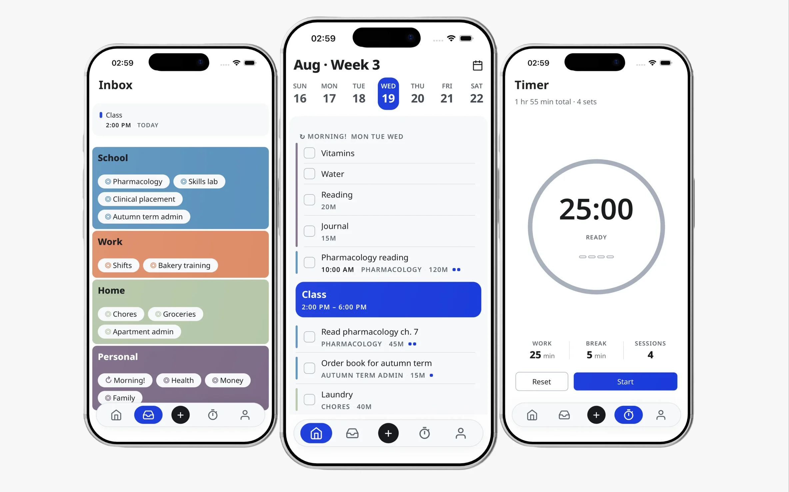
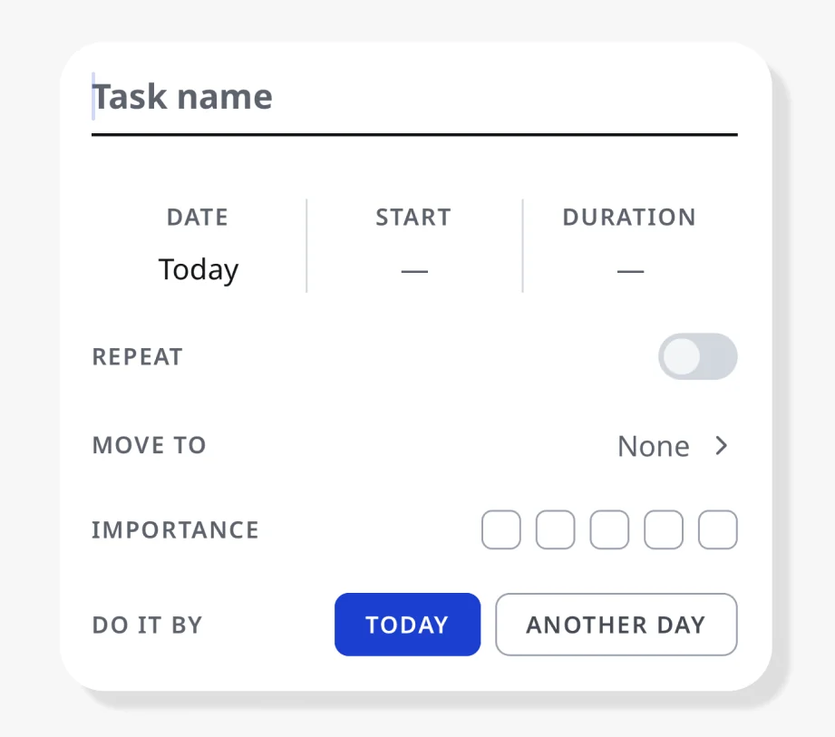
Duration makes the timer meaningful. Importance tells the reschedule where a task belongs. What you record here is what Reflow works with when the day changes.
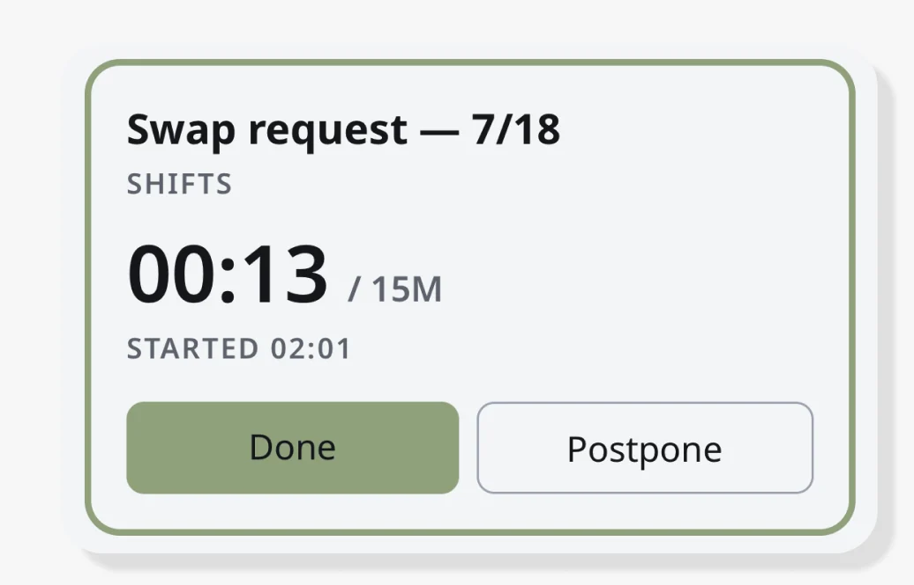
Elapsed time never appears alone. It sits against the estimate you set, so going over isn't an alert. It's the number you're already looking at.
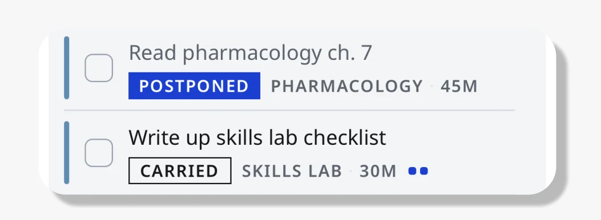
What didn't finish carries to tomorrow as a task, not as a backlog. There's no separate pile of missed things, and no day ends in failure.
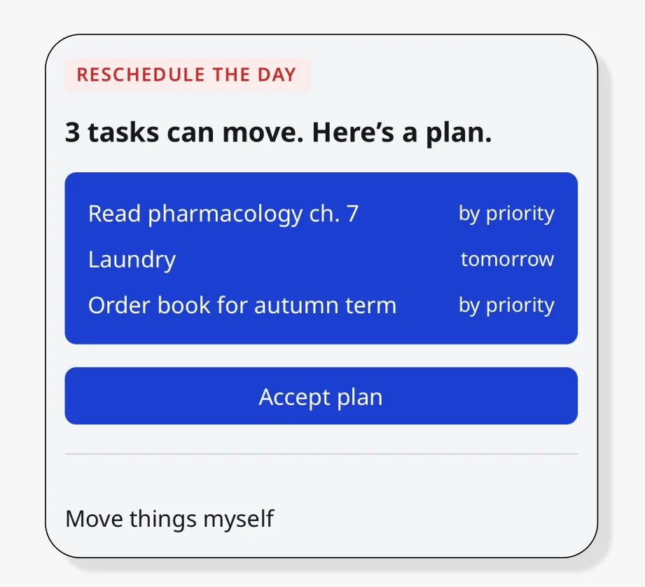
Reflow rebuilds the day around what's still unfinished and shows where every task lands before you accept it.
Reflow, the day planner that rebuilds your day when it breaks.
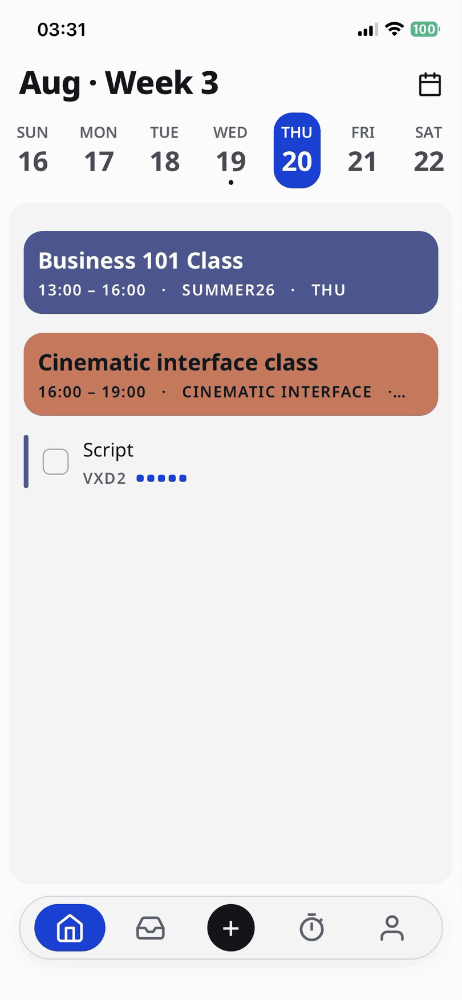
Reflow is a day planning app for people who plan carefully and still lose the day to a single overrun. One button rebuilds it around what's still unfinished. AI comes in at the one place judgment beats rules: guessing how long a task you've never done will take.
Reads
Unfinished tasks, duration, importance, fixed times
Generates
Every schedule that fits the time remaining
Selects
One proposal, ranked by importance and fit
Returns
Where each task lands, before you accept
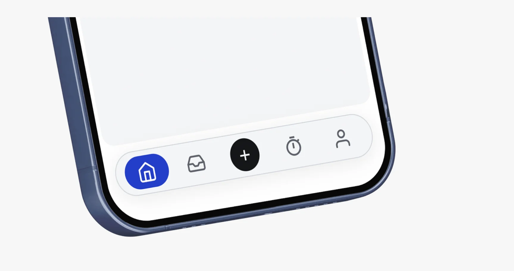
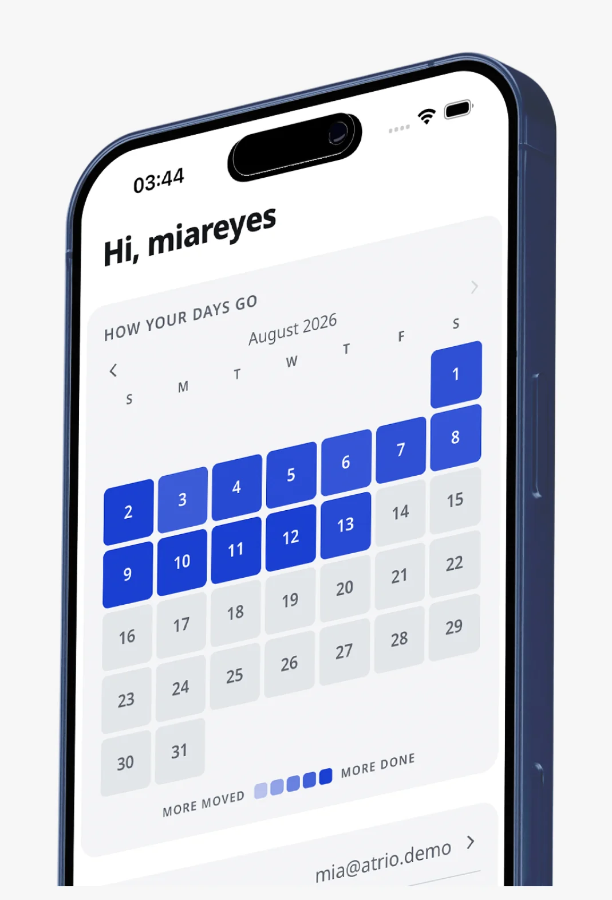
Pain Points
Days That Don't Close
The effort is there. The day still ends with tasks unfinished, and it's rarely clear which decision made it go
that way.
Estimates That Miss
Thirty minutes becomes an hour. The plan was never wrong about what mattered, only about how long it takes, and nothing in the day absorbs the difference.
Backlog That Compounds
What didn't finish lands on tomorrow, which was already full. After enough of those days, making a plan stops feeling worth it.
Each one feeds the next. The plan never gets a chance to catch up.
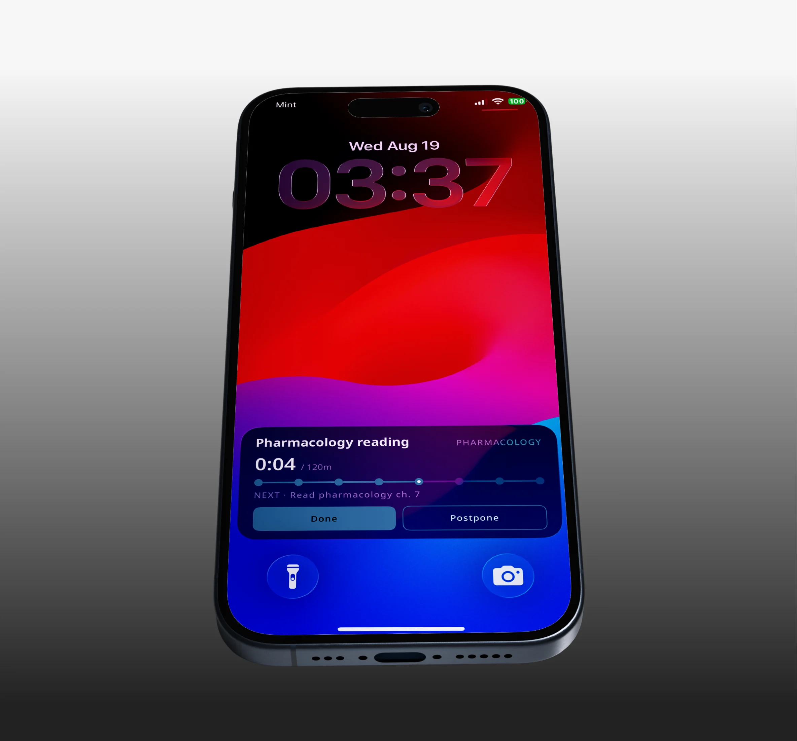
What the Day Feels Like
Says
- I had it all planned out and then one
thing ran long. - I'll just do it tomorrow.
- I don't know why I bother planning anymore.
Thinks
- I should have known that would take longer.
- If I move this, what else has to move?
- Everyone else seems to manage this fine.
Does
- Rewrites the list from scratch instead of adjusting it.
- Pushes the same task forward three days in a row.
- Stops opening the planner once the day is already off.
Feels
- Frustrated that effort didn't turn
into progress. - Overwhelmed by what's carried over.
- Resigned, and starts to plan less.
How might we help users plan their day so that even when things go wrong, they stay on track?
Organize tasks
Estimate time
Auto-reschedule
How Tasks Live
Area Project Task Time BlockThe largest container. Separate parts of life that don't mix.
A group of tasks that belongs together. Marked as a template when it repeats.
The unit of work. Carries a name and whatever detail you chose
to add.
An optional frame for the day. Set one when you want tasks to fall inside a boundary rather than float freely.
Critical Path
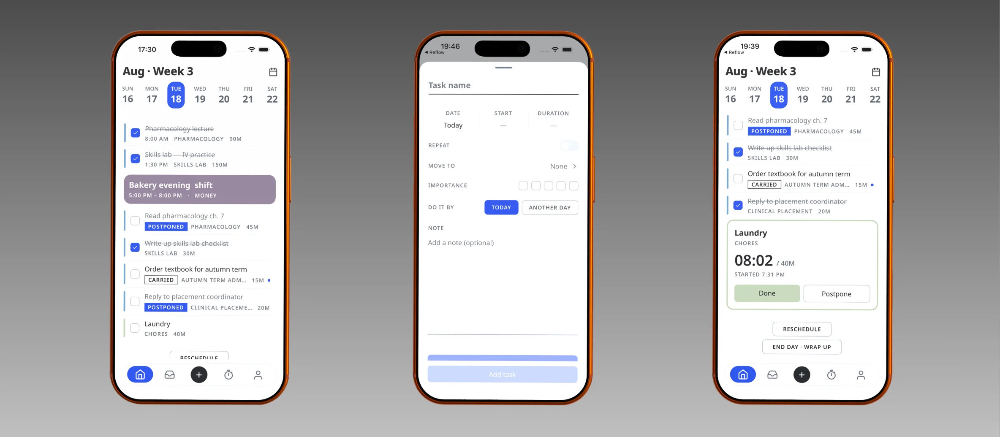
Today
Timed and untimed tasks in one list. The day is a sequence, not a grid.
Make task
A name is enough. Duration and importance are optional, and they're what the reschedule reads later.
During task
Elapsed time never appears alone. It sits against your estimate, so going over isn't an alert.
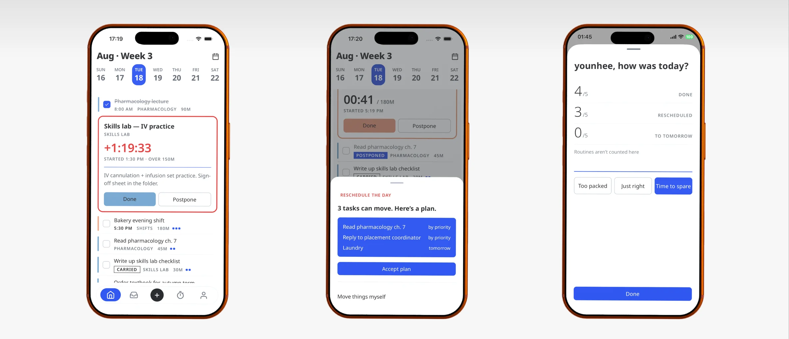
Task pending
Overdue, not failed. The task stays in place with three ways out.
Reschedule
One proposal, not a menu. Every move is shown before you accept it.
End of day
Done, ran over, moved. Counts without a score, and nothing marked as failure.
Design Foundation
Color System
Cobalt
Structure and interaction
Buttons, selection, toggles, mastheads. The one accent the interface is allowed to use, and it never means urgency.
#1B3FD1 / #6C8CFF
Clay
Live disruption only
A task running past its estimate, a destructive action. It never appears on a calm screen, so seeing it is information by itself.
#C62828 / #F0655A
Group Color
Twelve options, each a single hex rather than a light and dark pair. The ramp cycles through violet, rose, warm, green, teal and indigo so neighbours stay tellable apart, and contrast is measured per fill.
Typography
PRODUCT UI
Noto Sans
ABCDEFGHIJKLM
abcdefghijklm
0123456789 : / + %
Every screen in the app
BRAND LAYER
Geologica
ABCDEFGHIJKLM
abcdefghijklm
0123456789 : / + %
Logotype only, never in product
Logo System
Three waves, each offset from the one above. In motion the top line drops into the middle and the rest make room. It's the same move the app makes with a day: what didn't happen re-enters the flow instead of falling off it.
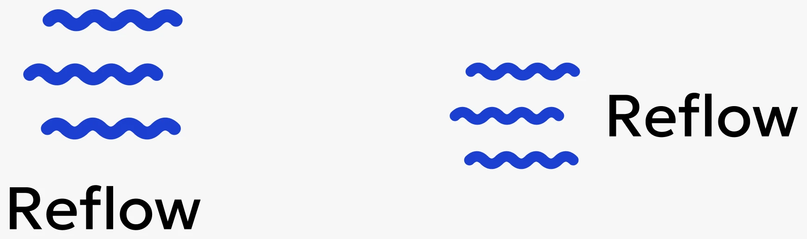
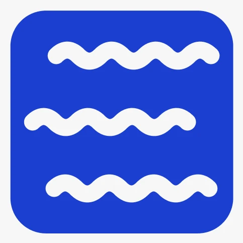
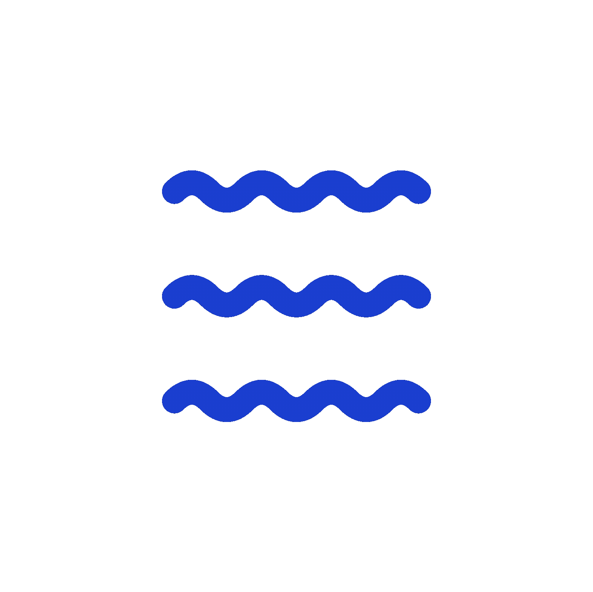
Designed and built solo over fourteen weeks
Design
App
Motion
iOS native
Live Activity needed the real APIs, so this part is written in Swift.
Backend
AI
Duration estimates only. The reschedule is deterministic and runs on rules.
Distribution